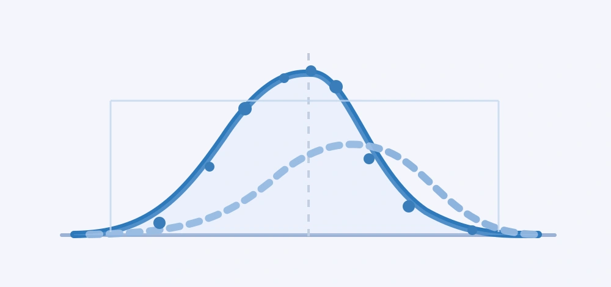

01 / RESEARCH AREA
Uncertainty Quantification
Quantifying uncertainties in hazards, structural properties, numerical models, and system performance.
- Probabilistic modeling and uncertainty propagation
- Structural reliability and risk assessment
- Surrogate modeling and data-driven simulation